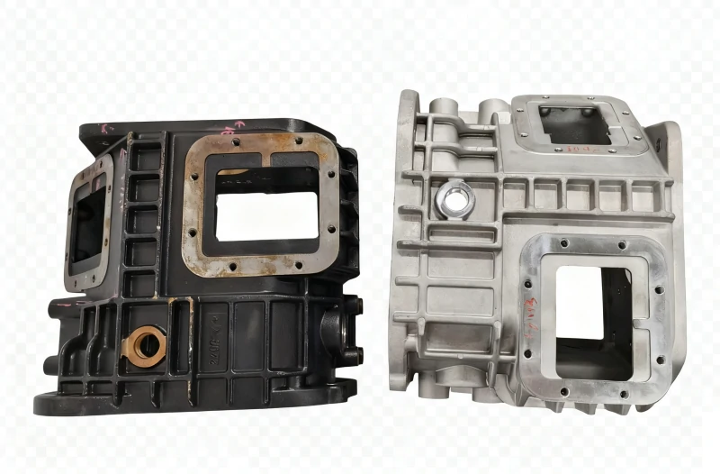
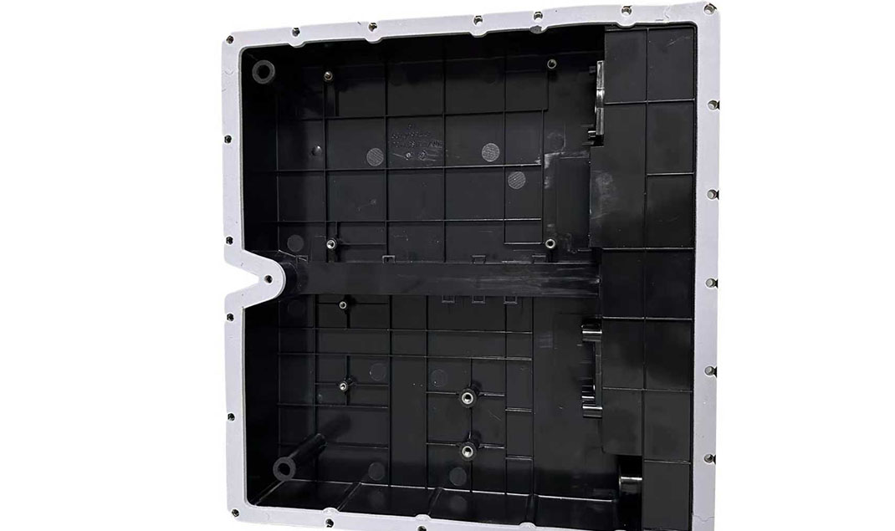
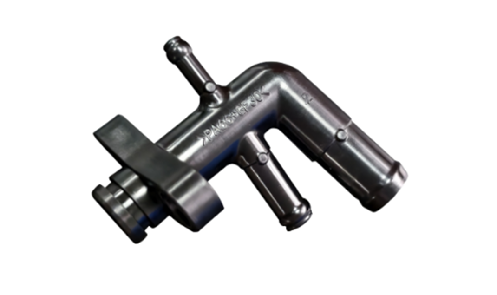

Do You Really Know All the Applications of Leak Testers?
In many people’s minds, the air leak tester seems to be equipment used only in the automotive or electronics industries.
But in reality, in modern industrial manufacturing, any product that involves sealability, waterproofing, or leak detection relies on leak testing technology. So the question is:
- 👉 In which industries can leak testers actually be applied?
- 👉 Why is almost every manufacturing sector using them?
- 👉 How many product categories do they actually cover?
Below, based on real industrial applications, we systematically outline the application fields of air leak testers.
1. Automotive Manufacturing & Parts Industry: The First Line of Safety
The automotive industry is one of the most extensive and demanding fields for leak tester applications. A car consists of tens of thousands of components, and any sealing failure in any part can lead to oil, water, or gas leakage, directly affecting vehicle performance and safety.
Engine and Powertrain Systems: Engine blocks, cylinder heads, intake pipes, and other engine parts need to be tested for sealing between the combustion chamber and cooling system to prevent gas leakage that reduces power. Fuel tanks, tank caps, high‑pressure fuel pipes, and fuel lines are potential fire hazards if leaked.

Braking and Driveline Systems: Brake calipers, brake system components, clutches, shock absorbers, drive shafts, etc. Their leak‑tightness directly relates to braking safety and driving stability.
New Energy and Three‑Electric Systems: This is the fastest‑growing application segment. Data shows that the Chinese leak testing equipment market reached 4.23 billion RMB in 2025 and is expected to grow to 5.02 billion RMB in 2026. Among these, the new energy sector accounts for 43.6% – the largest application area for domestic leak detectors. Specific products include:
- Battery Packs and Battery Housings: Micro‑leaks in battery packs can cause electrolyte evaporation or moisture ingress, leading to safety risks. Battery pack leak testers use compressed air and pressure‑decay methods to detect seal integrity.
- Battery Trays, Battery Boxes, Energy Storage Battery Packs, Lithium Batteries: All require strict sealing inspection.
- Motors and Motor Housings: EV motors, motor pumps, micro‑motors, etc.
- Motor Controllers, High‑Frequency Brushless Controllers, E‑bike Controllers, Bicycle Controllers: The dust and water protection rating of controllers directly determines product reliability.
- High‑Voltage Distribution Boxes, Automotive Distribution Boxes, DC Converters: Cooling system leaks can lead to thermal runaway risks in batteries.
- New Energy Vehicle Charging Heads, Charging Guns, Charging Gun Control Boxes: Leak testing can reduce the defect rate of charging interfaces from 1.2% to 0.3%.
- New Energy Vehicle Connectors, Automotive Connector Harnesses, High‑Voltage Harnesses: Water and dust resistance requirements for connectors are continuously increasing.
Body and Electronic Components: Headlights, taillights, turn signals, spotlights, lighting units, shark‑fin antennas, etc., require waterproof sealing tests. On‑board cameras, automotive cameras, dashcams, parking sensors, radar trackers, obstacle‑avoidance radars, automotive microwave radars, LiDAR, ultrasonic radar housings, and other sensor products have sealing that directly affects signal accuracy and service life. Tyre pressure sensors, temperature sensors, photoelectric sensors, heart‑rate sensors, etc., also need leak verification. Automotive wiring harnesses, stampings, die‑castings, aluminum alloy die‑cast products, and other structural parts also require sealing quality control.

2. New Energy & Battery Industry: The Core Guarantee of Safety
The explosive growth of the new energy industry has brought unprecedented market opportunities for leak testers. In addition to the new energy automotive components mentioned above, this includes:
Battery‑Related: Power batteries, lithium‑ion battery cases, lead‑acid battery cases, terminals and housings, battery chargers, battery boxes, etc. Photovoltaic inverters also need sealing tests to ensure reliable long‑term outdoor operation. Fire‑proof and explosion‑proof controllers, high‑voltage protection devices, and other safety components also depend on leak verification.
From an industry‑chain perspective, upstream core components of leak testing instruments include pressure sensors, vacuum pumps, solenoid valves, control valves, etc. – and these components themselves also require leak testing during production to ensure quality.

3. Consumer Electronics & 3C Industry: The Essential Need for Water and Dust Protection
As consumers’ demands for waterproof performance in electronic products keep rising, leak testers have become widely used in waterproof inspections for various consumer electronics.
Mobile Phones and Tablets: Whole phones, rear covers, middle frames, cases, phone cameras, card trays, interfaces, Type‑C ports, chargers, buttons, rugged phones, etc., all need waterproof leak testing. Laptops, tablets, and other large‑screen devices also require seal verification.
Wearable Devices: Smartwatches, fitness bands, phone watches, watch cases, watch glass covers, pet wearables, pedometers, etc., typically need to meet IP67 or IP68 waterproof ratings.
Audio Devices: Bluetooth speakers, sports speakers, Bluetooth earphones, speakers (drivers), etc. Air tightness directly affects sound quality and durability.
Other Consumer Electronics: E‑cigarettes, atomizers, electric shavers, electric toothbrushes, facial cleansers, beauty devices, massagers, hair clippers, water flossers, electronic scales, walkie‑talkies, and other small appliances and personal care products all need leak testing to ensure waterproofing and safe usage.

4. Medical Devices & Pharmaceutical Industry: Guardians of Life Safety
The medical device industry is directly related to people’s health and life safety, and has extremely stringent requirements for leak‑tightness. Leak testers are widely used in the manufacturing process of medical devices.
Diagnostic Equipment: Sphygmomanometers, blood pressure cuffs, electronic thermometers, thermometers, endoscopes (gastroscopes), capsule endoscopes, electronic stethoscopes, heart‑rate straps, face‑recognition temperature‑checking tablets, etc.
Therapeutic and Monitoring Equipment: Respirators, ventilator tubing, oxygen bags, artificial lungs, insulin pumps, radiofrequency plasma surgical electrodes, medical switches, etc.
Consumables and Containers: Infusion tubes, infusion bags, infusion bottles, blood bags, urine bags, trocars, medical tubes, medical bottle breathable films, medicinal plastic bottles, medical reagent kits, bacterial culture dishes, medicine bottles, etc.
Medical water tanks and medical bags (liquid storage containers) also require strict leak testing. Among these, negative‑pressure testing can simulate a vacuum environment of ‑90 kPa, meeting the sealing verification needs of various medical devices.

5. Home Appliances & Smart Home Industry: Guarantee of Quality Living
The sealing performance of home appliances directly affects user experience and safety. Coffee machines, grinders, soymilk makers, blenders, juicers, mixers, mixer rotary blades, electric kettles, water heaters, water purifiers, humidifiers, aroma diffusers, bread makers, foot baths, and other kitchen and living appliances require leak testing for their water systems and steam sealing.
Smart Home: Robot vacuum cleaners, smart locks, smart door handles, smart toilet seats, smart doorbells, washing machine inlet valves, etc. – water and dust resistance is a basic requirement. Fan radiators, server radiators, Bitcoin mining rigs, and other cooling devices also need leak verification to ensure heat dissipation efficiency.

6. Security & Outdoor Equipment: Reliability in Harsh Environments
Outdoor and security equipment are exposed to wind, rain, and humidity for long periods, making sealing integrity critical.
Security cameras, outdoor surveillance cameras, outdoor video cameras, monitors, underwater cameras, deep‑water cameras, panoramic cameras, action cameras, sights, scopes, telescopes, dashcams, and other imaging and observation devices must pass leak tests to ensure waterproofing and anti‑fog performance.
Outdoor lights, streetlights, LED lights, LED power housings, fire safety lights, projection lights, spotlights, diving lights, flashlights, portable explosion‑proof searchlights, and other lighting equipment require rigorous leak‑tight waterproof testing.
Communication base stations, outdoor routers, GPS trackers, positioning signal devices, explosion‑proof lights, security alarms, SOS distress alarms, underwater alarms, and other communication and security devices also rely on leak verification.

7. Valves, Piping & Connectors Industry: Protectors of Fluids
Valves, gas valves, coal gas valves, ball valves, solenoid valves, micro‑switches, filters, filter cartridges, water purifier filter elements, and other fluid control components – their sealing directly determines system safety and efficiency.
Water pipe joints, plastic corrugated pipes, hoses, oil pipes, air‑conditioning pipes, automotive A/C pipes, automotive A/C outlet ducts, and other tubing products need leak testing to ensure no leakage.
Connectors, harness connectors, automotive connectors, high‑voltage connectors, and other electrical connection parts have water and dust protection ratings as core quality indicators.

8. Other Industries: Sealing Needs Are Everywhere
Packaging Industry: Sunflower seed packaging, food packaging, pharmaceutical packaging (blister packs, vacuum bags, glass bottles, etc.) require seal testing to extend shelf life.
Military & Aerospace: Sealed containers, hydraulic and pneumatic components, aircraft engine parts, fuel systems, hydraulic system components, spacecraft sealed cabins, etc.
Plumbing & Sanitary Ware: Faucets, valves, pipe fittings, showerheads, bathroom spray heads, etc.
Rail Transit: Train brake system components, A/C system piping, window sealing strips, etc.
Other Products: IC cards, electronic tags, water meters, electricity meters, vacuum test chambers, floats, detectors, sensors, shared‑bike locks, drone propellers, Barbie dolls and other toys, pet training devices, etc. – all fall within the scope of leak testing applications.

9. Conclusion
From automotive engines to phone cameras, from battery packs to infusion tubes, from robot vacuums to drone propellers – leak testers have already penetrated every aspect of modern industrial manufacturing. Automotive, new energy, consumer electronics, medical devices, home appliances, security, valves and piping … almost every industry that demands sealing integrity relies on leak testing equipment to safeguard quality.
Behind every tested product lies a commitment to quality and a guarantee of safety.